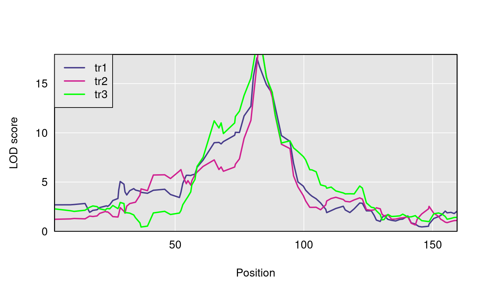

Multivariate analysis for two or more traits
Frederick Boehm
2020-07-01
Source:vignettes/d-variate-analysis.Rmd
d-variate-analysis.RmdThe goal of this vignette is to introduce the functions that enable d-variate (for \(d \ge 2\)) QTL analysis for d traits that each univariately map to a shared region of the genome. One may then ask whether the d traits share a single, pleiotropic QTL. The alternative hypothesis is that there is more than one QTL giving rise to the phenotype-genotype associations.
is_inst <- function(pkg) { nzchar(system.file(package = pkg)) } qtl2_indic <- is_inst("qtl2")
We also load the qtl2 package with the library command.
Reading data from qtl2data repository on github
We’ll consider the DOex data in the qtl2data repository. We’ll download the DOex.zip file before calculating founder allele dosages.
file <- paste0("https://raw.githubusercontent.com/rqtl/", "qtl2data/master/DOex/DOex.zip") DOex <- read_cross2(file)
Let’s calculate the founder allele dosages from the 36-state genotype probabilities.
probs <- calc_genoprob(DOex) pr <- genoprob_to_alleleprob(probs)
We now have an allele probabilities object stored in pr.
Kinship calculations
For our statistical model, we need a kinship matrix. Although we don’t have genome-wide data - since we have allele probabilities for only 3 chromosomes - let’s calculate a kinship matrix using “leave-one-chromosome-out”. In practice, one would want to use allele probabilities from a full genome-wide set of markers.
calc_kinship(probs = pr, type = "loco") -> kinship
Simulating phenotypes with qtl2pleio::sim1
The function to simulate phenotypes in qtl2pleio is sim1. By examining its help page, we see that it takes five arguments. The help page also gives the dimensions of the inputs.
# set up the design matrix, X pp <- pr[[2]] #we'll work with Chr 3's genotype data dim(pp)
## [1] 261 8 102We prepare a block-diagonal design matrix X that contains two nonzero blocks on the diagonal, one for each trait. We use here a function from the gemma2 R package to set up the needed matrix.
#Next, we prepare a design matrix X X <- gemma2::stagger_mats(pp[ , , 50], pp[ , , 50], pp[ , , 50]) dim(X)
## [1] 783 24\(X\) is a block-diagonal matrix, with 3 diagonal blocks of equal dimension.
# assemble B matrix of allele effects B <- matrix(data = rep(rep(c(-1, 1), each = 4), times = 3), nrow = 8, ncol = 3, byrow = FALSE) # verify that B is what we want: B
## [,1] [,2] [,3]
## [1,] -1 -1 -1
## [2,] -1 -1 -1
## [3,] -1 -1 -1
## [4,] -1 -1 -1
## [5,] 1 1 1
## [6,] 1 1 1
## [7,] 1 1 1
## [8,] 1 1 1# set.seed to ensure reproducibility set.seed(2018-01-30) Sigma <- calc_Sigma(Vg = diag(3), Ve = diag(3), kinship = kinship[[2]]) # call to sim1 Ypre <- sim1(X = X, B = B, Sigma = Sigma) Y <- matrix(Ypre, nrow = 261, ncol = 3, byrow = FALSE) rownames(Y) <- rownames(pp) colnames(Y) <- c("tr1", "tr2", "tr3")
Let’s perform univariate QTL mapping for each trait (ie, each column) in the Y matrix.
s1 <- scan1(genoprobs = pr, pheno = Y, kinship = kinship)
Here is a plot of the results.
plot(s1, DOex$pmap$`3`) plot(s1, DOex$pmap$`3`, lod = 2, col ="violetred", add=TRUE) plot(s1, DOex$pmap$`3`, lod = 3, col ="green", add=TRUE) legend("topleft", colnames(s1), lwd = 2, col=c("darkslateblue", "violetred", "green"), bg="gray92")

find_peaks(s1, map = DOex$pmap, threshold = 8)
## lodindex lodcolumn chr pos lod
## 1 1 tr1 3 81.75897 17.60763
## 2 2 tr2 3 82.77806 19.82599
## 3 3 tr3 3 82.77806 20.10788Perform three-dimensional scan as first step in pleiotropy v separate QTL hypothesis test
We now have the inputs that we need to do a pleiotropy vs. separate QTL test. We have the founder allele dosages for one chromosome, i.e., Chr 3, in the R object pp, the matrix of two trait measurements in Y, and a LOCO-derived kinship matrix. We also specify, via the start_snp argument, the starting point for the two-dimensional scan within the array of founder allele dosages. Here, we choose the 38th marker in the array as the starting point. Via the n_snp argument, we specify the number of markers to include in the two-dimensional scan. Here, we input 15, so that we fit the trivariate linear mixed effects model at 151515 = 3375 ordered triples of markers. In practice, we usually use between 100 and 300 markers for most bivariate scans.
Lastly, we specify the number of cores to use, with the n_cores argument. We set it to 1 here, to ensure that the vignette can be run by CRAN. However, in practice, you may wish to increase the number of cores to accelerate computing.
start_index <- 43 out <- scan_pvl(probs = pp, pheno = Y, kinship = kinship$`3`, start_snp = start_index, n_snp = 15 )
## starting covariance matrices estimation with data from 261 subjects.## covariance matrices estimation completed.Create a profile LOD plot to visualize results of three-dimensional scan
To visualize results from our two-dimensional scan, we calculate profile LOD for each trait. The code below makes use of the R package ggplot2 to plot profile LODs over the scan region.
out## # A tibble: 3,375 x 4
## Var1 Var2 Var3 log10lik
## <chr> <chr> <chr> <dbl>
## 1 backupUNC030474070 backupUNC030474070 backupUNC030474070 -559.
## 2 backupUNC030474244 backupUNC030474070 backupUNC030474070 -559.
## 3 UNC030103315 backupUNC030474070 backupUNC030474070 -559.
## 4 UNC030107226 backupUNC030474070 backupUNC030474070 -559.
## 5 JAX00527615 backupUNC030474070 backupUNC030474070 -558.
## 6 UNC030484421 backupUNC030474070 backupUNC030474070 -557.
## 7 JAX00109598 backupUNC030474070 backupUNC030474070 -557.
## 8 backupUNC030619800 backupUNC030474070 backupUNC030474070 -558.
## 9 UNC030314351 backupUNC030474070 backupUNC030474070 -559.
## 10 backupUNC030491543 backupUNC030474070 backupUNC030474070 -559.
## # … with 3,365 more rowsWe see that out is a tibble, as expected. The first three columns contain the marker ids for each ordered triple of markers. The last column contains the log-likelihood values.
library(dplyr)
##
## Attaching package: 'dplyr'## The following objects are masked from 'package:stats':
##
## filter, lag## The following objects are masked from 'package:base':
##
## intersect, setdiff, setequal, unionlibrary(ggplot2) out_lods <- out %>% calc_profile_lods() %>% add_pmap(pmap = DOex$pmap$`3`)
## Joining, by = "marker"
Calculate the likelihood ratio test statistic for pleiotropy v separate QTL
We use the function calc_lrt_tib to calculate the likelihood ratio test statistic value for the specified traits and specified genomic region.
(lrt <- max(out_lods$profile_lod))
## [1] 1.012118Bootstrap analysis to get p-values
The calibration of test statistic values to get p-values uses bootstrap methods because we don’t know the theoretical distribution of the test statistic under the null hypothesis. Thus, we use a bootstrap approach to obtain an empirical distribution of test statistic values under the null hypothesis of the presence of one pleiotropic locus.
We will use the function boot_pvl from our package qtl2pleio.
We use a parametric bootstrap strategy in which we first use the studied phenotypes to infer the values of model parameters. Once we have the inferred values of the model parameters, we simulate phenotypes from the pleiotropy model (with the inferred parameter values).
A natural question that arises is “which marker’s allele probabilities do we use when simulating phenotypes?” We use the marker that, under the null hypothesis, i.e., under the pleiotropy constraint, yields the greatest value of the log-likelihood.
Before we call boot_pvl, we need to identify the index (on the chromosome under study) of the marker that maximizes the likelihood under the pleiotropy constraint. To do this, we use the qtl2pleio function find_pleio_peak_tib.
(pleio_index <- find_pleio_peak_tib(out, start_snp = start_index))
## log10lik8
## 50set.seed(2018 - 11 - 25) suppressMessages(b_out <- boot_pvl(probs = pp, pheno = Y, pleio_peak_index = pleio_index, kinship = kinship$`3`, nboot = 2, start_snp = start_index, n_snp = 15 ) )
The argument nboot indicates the number of bootstrap samples that will be created and analyzed. Here, we set nboot = 2, so we expect to see returned a numeric vector of length 2, where each entry is a LRT statistic value from a distinct bootstrap sample.
Finally, we determine a bootstrap p-value in the usual method. We treat the bootstrap samples’ test statistics as an empirical distribution of the test statistic under the null hypothesis of pleiotropy. Thus, to get a p-value, we want to ask “What is the probability, under the null hypothesis, of observing a test statistic value that is at least as extreme as that which we observed?”
b_out## [1] 0.0000000 0.2445236(pvalue <- mean(b_out >= lrt))
## [1] 0In practice, one would want to use many more bootstrap samples to achieve an empirical distribution that is closer to the theoretical distribution of the test statistic under the null hypothesis.
However, if one wants to perform analyses with a reasonable number - say 400 - bootstrap samples, this will take a very long time - many days - on a single laptop computer. We have used a series of computer clusters that are coordinated by the University of Wisconsin-Madison’s Center for High-throughput Computing (http://chtc.cs.wisc.edu). We typically are able to analyze 1000 bootstrap samples - for a bivariate analysis - in less than 24 hours with this service.
Session info
devtools::session_info()
## ─ Session info ───────────────────────────────────────────────────────────────
## setting value
## version R version 4.0.0 (2020-04-24)
## os Ubuntu 20.04 LTS
## system x86_64, linux-gnu
## ui X11
## language (EN)
## collate en_US.UTF-8
## ctype en_US.UTF-8
## tz America/New_York
## date 2020-07-01
##
## ─ Packages ───────────────────────────────────────────────────────────────────
## package * version date lib source
## assertthat 0.2.1 2019-03-21 [2] CRAN (R 4.0.0)
## backports 1.1.8 2020-06-17 [2] CRAN (R 4.0.0)
## bit 1.1-15.2 2020-02-10 [2] CRAN (R 4.0.0)
## bit64 0.9-7 2017-05-08 [2] CRAN (R 4.0.0)
## blob 1.2.1 2020-01-20 [2] CRAN (R 4.0.0)
## callr 3.4.3 2020-03-28 [2] CRAN (R 4.0.0)
## cli 2.0.2 2020-02-28 [2] CRAN (R 4.0.0)
## codetools 0.2-16 2018-12-24 [2] CRAN (R 4.0.0)
## colorspace 1.4-1 2019-03-18 [2] CRAN (R 4.0.0)
## crayon 1.3.4 2017-09-16 [2] CRAN (R 4.0.0)
## data.table 1.12.8 2019-12-09 [2] CRAN (R 4.0.0)
## DBI 1.1.0 2019-12-15 [2] CRAN (R 4.0.0)
## desc 1.2.0 2018-05-01 [2] CRAN (R 4.0.0)
## devtools 2.3.0 2020-04-10 [2] CRAN (R 4.0.0)
## digest 0.6.25 2020-02-23 [2] CRAN (R 4.0.0)
## dplyr * 1.0.0 2020-05-29 [2] CRAN (R 4.0.0)
## ellipsis 0.3.1 2020-05-15 [2] CRAN (R 4.0.0)
## evaluate 0.14 2019-05-28 [2] CRAN (R 4.0.0)
## fansi 0.4.1 2020-01-08 [2] CRAN (R 4.0.0)
## farver 2.0.3 2020-01-16 [2] CRAN (R 4.0.0)
## fs 1.4.1 2020-04-04 [2] CRAN (R 4.0.0)
## furrr 0.1.0 2018-05-16 [2] CRAN (R 4.0.0)
## future 1.17.0 2020-04-18 [2] CRAN (R 4.0.0)
## gemma2 0.1.1 2019-10-01 [2] CRAN (R 4.0.0)
## generics 0.0.2 2018-11-29 [2] CRAN (R 4.0.0)
## ggplot2 * 3.3.2 2020-06-19 [2] CRAN (R 4.0.0)
## globals 0.12.5 2019-12-07 [2] CRAN (R 4.0.0)
## glue 1.4.1 2020-05-13 [2] CRAN (R 4.0.0)
## gtable 0.3.0 2019-03-25 [2] CRAN (R 4.0.0)
## htmltools 0.5.0 2020-06-16 [2] CRAN (R 4.0.0)
## jsonlite 1.6.1 2020-02-02 [2] CRAN (R 4.0.0)
## knitr 1.28 2020-02-06 [2] CRAN (R 4.0.0)
## labeling 0.3 2014-08-23 [2] CRAN (R 4.0.0)
## lattice 0.20-41 2020-04-02 [2] CRAN (R 4.0.0)
## lifecycle 0.2.0 2020-03-06 [2] CRAN (R 4.0.0)
## listenv 0.8.0 2019-12-05 [2] CRAN (R 4.0.0)
## magrittr 1.5 2014-11-22 [2] CRAN (R 4.0.0)
## MASS 7.3-51.6 2020-04-26 [2] CRAN (R 4.0.0)
## Matrix 1.2-18 2019-11-27 [2] CRAN (R 4.0.0)
## memoise 1.1.0 2017-04-21 [2] CRAN (R 4.0.0)
## munsell 0.5.0 2018-06-12 [2] CRAN (R 4.0.0)
## pillar 1.4.4 2020-05-05 [2] CRAN (R 4.0.0)
## pkgbuild 1.0.8 2020-05-07 [2] CRAN (R 4.0.0)
## pkgconfig 2.0.3 2019-09-22 [2] CRAN (R 4.0.0)
## pkgdown 1.5.1 2020-04-09 [2] CRAN (R 4.0.0)
## pkgload 1.1.0 2020-05-29 [2] CRAN (R 4.0.0)
## prettyunits 1.1.1 2020-01-24 [2] CRAN (R 4.0.0)
## processx 3.4.2 2020-02-09 [2] CRAN (R 4.0.0)
## ps 1.3.3 2020-05-08 [2] CRAN (R 4.0.0)
## purrr * 0.3.4 2020-04-17 [2] CRAN (R 4.0.0)
## qtl2 * 0.22-8 2020-06-26 [2] CRAN (R 4.0.0)
## qtl2pleio * 1.3.0 2020-07-01 [1] local
## R6 2.4.1 2019-11-12 [2] CRAN (R 4.0.0)
## Rcpp 1.0.4.6 2020-04-09 [2] CRAN (R 4.0.0)
## remotes 2.1.1 2020-02-15 [2] CRAN (R 4.0.0)
## rlang 0.4.6 2020-05-02 [2] CRAN (R 4.0.0)
## rmarkdown 2.3 2020-06-18 [2] CRAN (R 4.0.0)
## rprojroot 1.3-2 2018-01-03 [2] CRAN (R 4.0.0)
## RSQLite 2.2.0 2020-01-07 [2] CRAN (R 4.0.0)
## rstudioapi 0.11 2020-02-07 [2] CRAN (R 4.0.0)
## scales 1.1.1 2020-05-11 [2] CRAN (R 4.0.0)
## sessioninfo 1.1.1 2018-11-05 [2] CRAN (R 4.0.0)
## stringi 1.4.6 2020-02-17 [2] CRAN (R 4.0.0)
## stringr 1.4.0 2019-02-10 [2] CRAN (R 4.0.0)
## testthat 2.3.2 2020-03-02 [2] CRAN (R 4.0.0)
## tibble 3.0.1 2020-04-20 [2] CRAN (R 4.0.0)
## tidyselect 1.1.0 2020-05-11 [2] CRAN (R 4.0.0)
## usethis 1.6.1 2020-04-29 [2] CRAN (R 4.0.0)
## utf8 1.1.4 2018-05-24 [2] CRAN (R 4.0.0)
## vctrs 0.3.1 2020-06-05 [2] CRAN (R 4.0.0)
## withr 2.2.0 2020-04-20 [2] CRAN (R 4.0.0)
## xfun 0.15 2020-06-21 [2] CRAN (R 4.0.0)
## yaml 2.2.1 2020-02-01 [2] CRAN (R 4.0.0)
##
## [1] /tmp/RtmpOzXNnc/temp_libpath130b0529daeb1
## [2] /home/fred/R/x86_64-pc-linux-gnu-library/4.0
## [3] /usr/local/lib/R/site-library
## [4] /usr/lib/R/site-library
## [5] /usr/lib/R/library